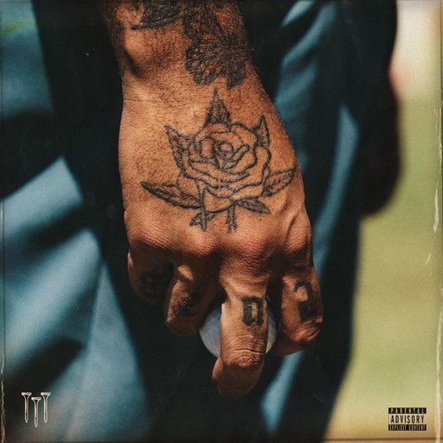
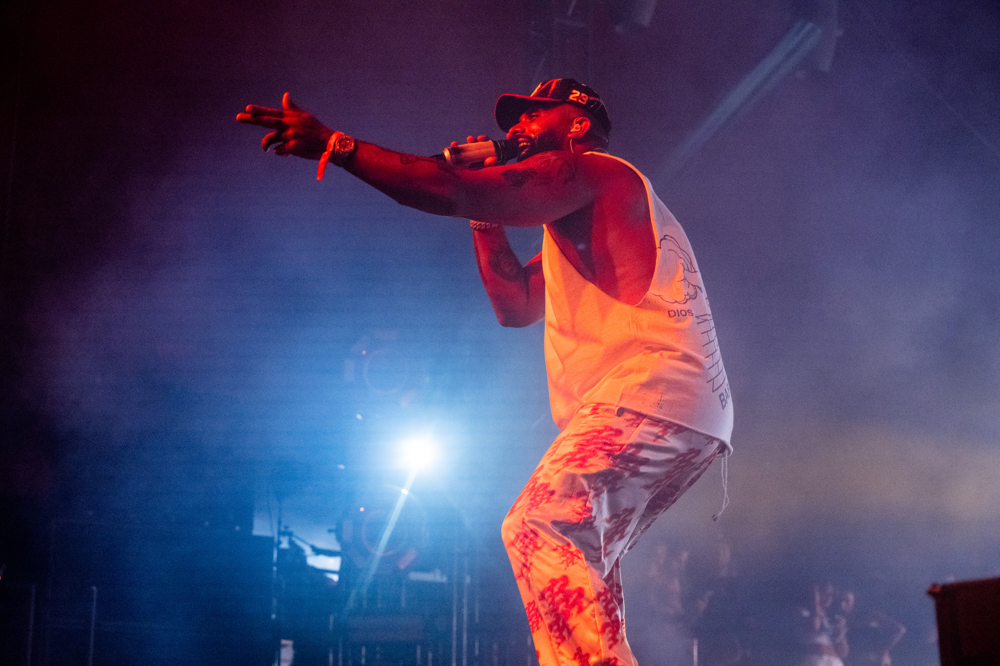
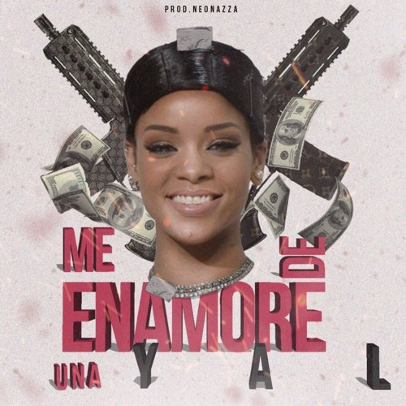
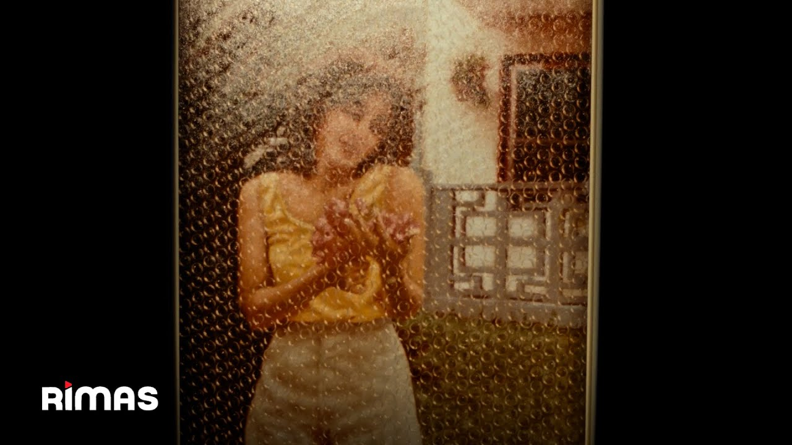
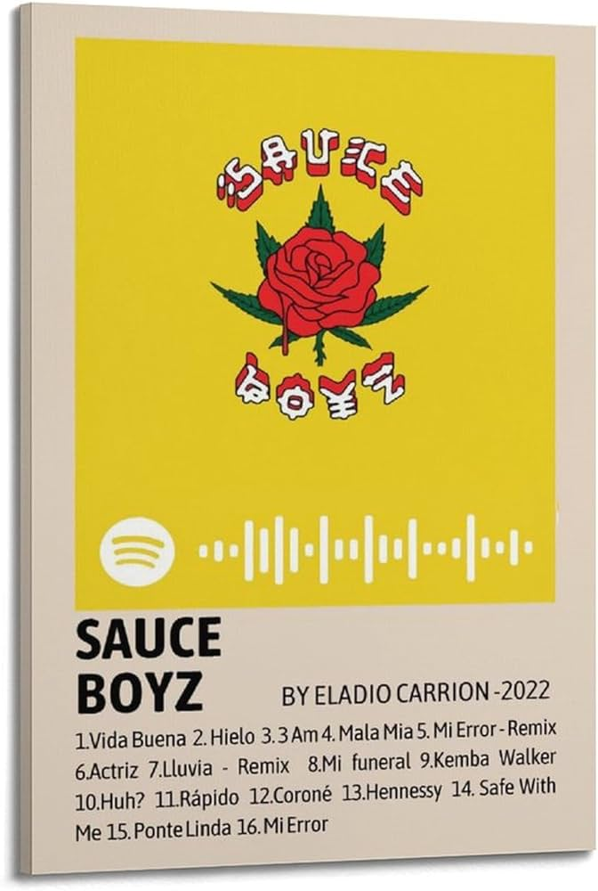
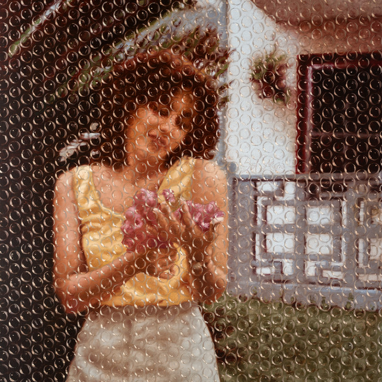

Eladio Carrion

Año de inicio/finalización:
Comenzó en 2015. Sin embargo, tiempo antes ya era conocido como influencer en Puerto Rico haciendo parodias imitando las voces de artistas como Arcángel, Ñejo, Cosculluela, entre otros.
Canción Más Popular:
Kemba Walker fue una cancion dedicada a Kemba un jugador de baloncesto que la saco junto a uno de los mayores cantantes de la historia que es Bad Bunny
10 canciones más escuchadas:
Album más escuchado/Vendido:
3MEN2 KBRN es el séptimo álbum de estudio de Eladio Carrion, lanzado solo unos meses después de 'SEN2 KBRN Vol.2' en 2022. Este álbum destacó por su innovación en el género urbano y sus colaboraciones con otros artistas destacados.
Primer Concierto:
Su primer concierto conocido fue en 2020 como parte de un tour que marcó el inicio de su carrera en los escenarios, atrayendo a una nueva audiencia con su estilo único.
Último concierto:
En 2024, Eladio Carrion comenzará una gira que empieza el 17 de mayo en Gran Canaria para promocionar su último álbum 'Sol María', llevando su música a diferentes ciudades y mostrando su crecimiento artístico.
Primera Canción:
Me enamoré de una yal fue su primer éxito como artista, colaborando en el sencillo junto a Ñengo Flow y Ele A el Dominio. Esta canción marcó el comienzo de su carrera en la industria musical.
Última canción:
'El malo' fue su última canción oficial lanzada junto a Sech, parte de su último álbum 'Sol María'. Esta colaboración muestra su evolución musical y su capacidad para innovar en el género urbano.
Primer álbum:
Sauce Boyz fue su álbum de estudio debut lanzado en 2020, alcanzando el Top Latin Albums durante 10 semanas consecutivas y estableciendo a Eladio Carrion como una figura emergente en la escena urbana.
Último álbum:
El 19 de enero de 2024, Eladio Carrion lanzó su quinto álbum de estudio titulado 'Sol María' bajo la discográfica Rimas Entertainment. Con 17 canciones y colaboraciones con artistas como Milo J, Yandel, Rauw Alejandro, Arcángel, De la Ghetto, Sech, Duki y Nach, este álbum fue un homenaje dedicado a su madre y consolidó su posición en la industria musical.
Biografía:
Eladio Carrión Morales es un rapero y compositor estadounidense. Su carrera musical profesional comenzó en 2015. Antes de eso, era conocido en Puerto Rico por sus parodias e imitaciones de voces de artistas como Arcángel, Ñejo y Cosculluela en las redes sociales, lo que lo llevó a convertirse en un influencer reconocido antes de lanzarse como artista.